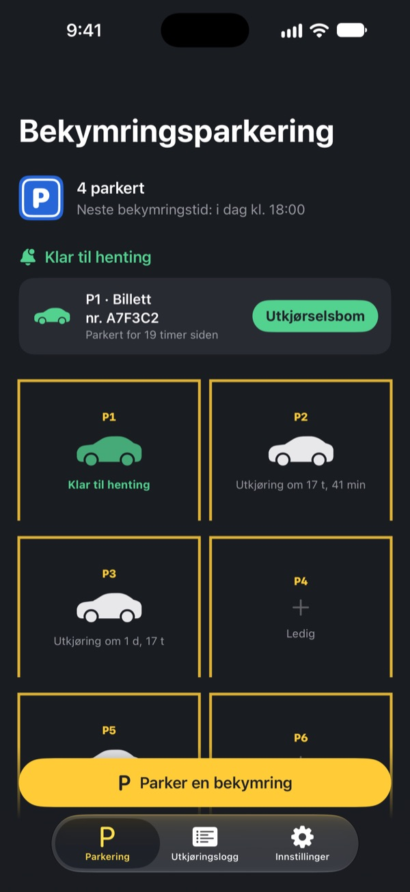
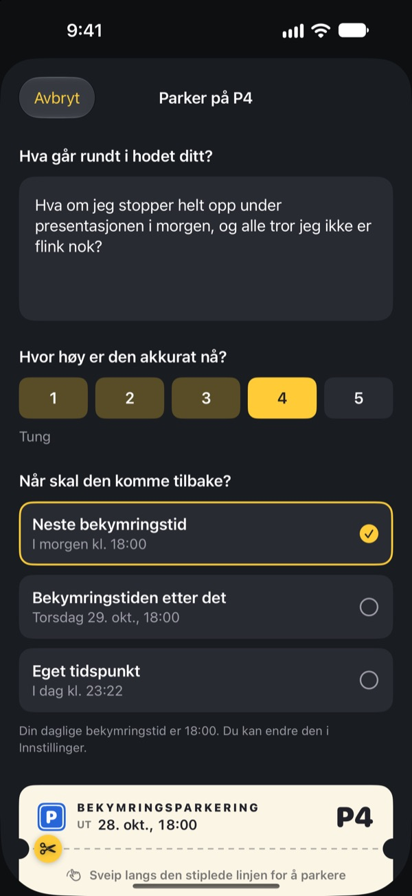
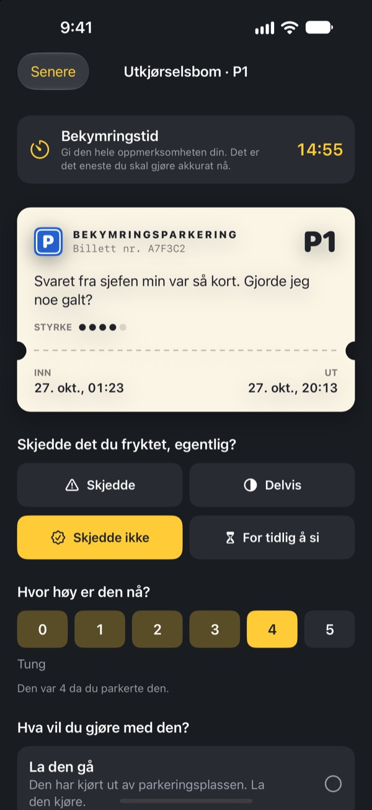
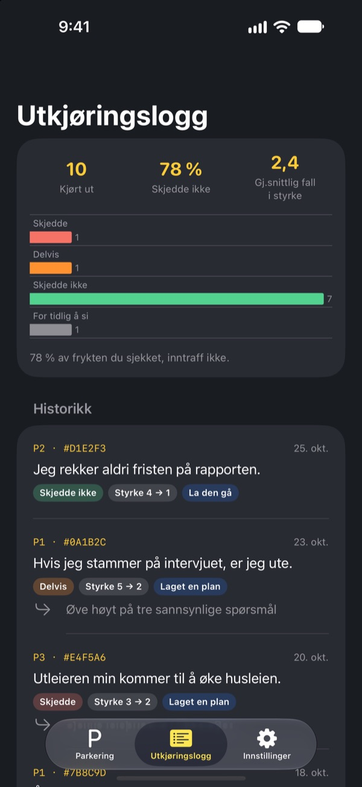

Parker bekymringen.
Hent den senere.
Skriv ned det som surrer i hodet ved leggetid, og legg det igjen på en parkeringslapp. Du får det tilbake i bekymringstiden din. Fram til da trenger du ikke bære på det.
Alle funksjoner er gratis. Ingen reklame, ingen konto.

Parker én bekymring
Behold eksempelet, eller skriv det som opptar deg akkurat nå. Når den er parkert, blir den uskarp, og i bekymringstiden tar du den fram igjen.
Lyset av, hodet på?
Straks hodet treffer puta, setter det i gang: noe du sa i dag, møtet i morgen, meldingen ingen har svart på. Jo mer du prøver å la være å tenke, jo høyere blir det. Bekymringsparkering ber deg ikke dytte bekymringen bort. Du skriver den ned, gir den en plass og setter av tid til å ta tak i den.
Skrevet ned er ute av hodet
Skriv den akkurat slik den høres ut i hodet, og angi hvor høy den er nå, fra 1 til 5. Riv av lappen, så blir bekymringen stående uskarp på parkeringen.
Kjører den inn i hodet igjen, si til den: du har allerede en plass. Din tid kommer, men ikke nå.

15 minutter i bekymringstiden
Hver dag i bekymringstiden får du en påminnelse. Ved utkjørselsbommen leser du bekymringen igjen og sjekker om den faktisk skjedde, og hvor høy den er nå.
Så slipper du den, gjør den om til et lite neste steg eller parkerer den til neste bekymringstid.

Se hvor ofte bekymringene slo til
Jo flere bekymringer som har kjørt ut, jo tydeligere viser utkjøringsloggen hvor mange som faktisk skjedde, og hvor mye styrken falt.
Bekymringer maler ofte framtiden verre enn den blir. Jo mer du logger, jo mindre tror du på den neste.

Kom i gang på tre steg
- 1
Velg bekymringstiden din
Første gang du åpner appen, velger du når du skal ta tak i bekymringene hver dag. Du kan endre det senere i Innstillinger.
- 2
Parker en ekte bekymring
Parker med en gang noe som tynger, og kjenn hvordan styrken endrer seg før og etter.
- 3
Tillat hentepåminnelser
I bekymringstiden får du en påminnelse med bare plassnummeret.
Derfor virker det
- Bekymre deg bare til en fast tid
- De som flyttet bekymringene til en kort daglig stund, bekymret seg mindre og rapporterte mindre angst og færre søvnproblemer. (Borkovec mfl., 1983; McGowan & Behar, 2013)
- Skriv ned for å gi slipp
- En konkret plan holdt uferdige oppgaver ute av tankene, og fem minutters skriving før leggetid hjalp folk å sovne raskere. (Masicampo & Baumeister, 2011; Scullin mfl., 2018)
- Sjekk hva som faktisk skjedde
- Da personer med kronisk bekymring loggførte bekymringene sine, slo 91 % av dem aldri til. (LaFreniere & Newman, 2020)
Bekymringsparkering bygger på utsettelse av bekymringer, en teknikk fra kognitiv atferdsterapi (KAT) som har vært forsket på i flere tiår.
Alt er gratis
Gratis
- Ubegrenset antall parkeringsplasser
- Daglige påminnelser i bekymringstiden og selvvalgt utkjøringstid
- Utkjørselsbom og utkjøringslogg
- Innsikt om utkjøringer: hvor mange som skjedde, og hvor mye styrken falt
Tips, om du vil
- Hvis appen hjelper, kan du gi utvikleren litt tips
- Lite, middels eller stort, som du vil
Tips låser ikke opp noe. Uten fungerer alt likt.
Ingen reklame, ingen konto, ingen servere, ingen analyseverktøy. Alt du skriver, blir på iPhonen din.
Vanlige spørsmål
Hvordan endrer jeg bekymringstiden?
Under Bekymringstid i fanen Innstillinger. Den nye tiden gjelder for bekymringer du parkerer etter det. Bekymringer som allerede står parkert, beholder den opprinnelige utkjøringstiden.
Jeg får ingen hentepåminnelser.
Sjekk Varsler i fanen Innstillinger. Er de slått av, trykker du på Åpne innstillinger i iOS og slår dem på. Med fokus eller Ikke forstyrr på kan påminnelser komme lydløst. Selv uten påminnelse vises bekymringer som er klare, som klare til henting på parkeringen.
Står bekymringen min i varselet?
Nei. Varsler viser bare plassnummeret, for eksempel «P3 er klar til henting». Selve bekymringen ser du først når du åpner appen og går til utkjørselsbommen.
Kan jeg se en bekymring før bekymringstiden?
Trykk på bilen dens på parkeringen og velg Send den til utkjørselsbommen nå. Utsettelse virker likevel best når du venter. De fleste bekymringer føles mindre når bekymringstiden kommer.
Kan jeg flytte loggen til en ny iPhone?
Alt lagres bare på iPhonen din, uten konto eller synkronisering. Gjenoppretter du en ny iPhone fra en sikkerhetskopi i iCloud eller på datamaskinen, eller bruker Hurtigstart, følger loggen med sammen med de andre appene dine.
Hvordan sletter jeg loggen?
Sveip en oppføring til venstre i fanen Utkjøringslogg for å slette den. Sletter du appen, forsvinner alt.
Er dette behandling?
Bekymringsparkering er et selvhjelpsverktøy som bygger på utsettelse av bekymringer fra KAT. Det er ikke medisinsk utstyr og erstatter ikke profesjonell diagnose eller behandling.
Hva om jeg har det skikkelig tungt?
Hvis bekymringene tar over dagene dine, eller du tenker på å skade deg selv, ikke bær det alene. I Norge kan du ringe 113 ved akutt fare, eller Mental Helse Hjelpetelefonen på 116 123.
Spørsmål eller ideer? Skriv til leeo@kakao.com.